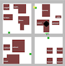

|  |
Manage Disaster using Coalition Formation among Autonomous Software Multi-Agent SystemBy Udara Weerakoon |
|
Disaster Manager Project will help me to finish my PhD. The required software applications are as followed: |
| For Twitter information: twitter.html |